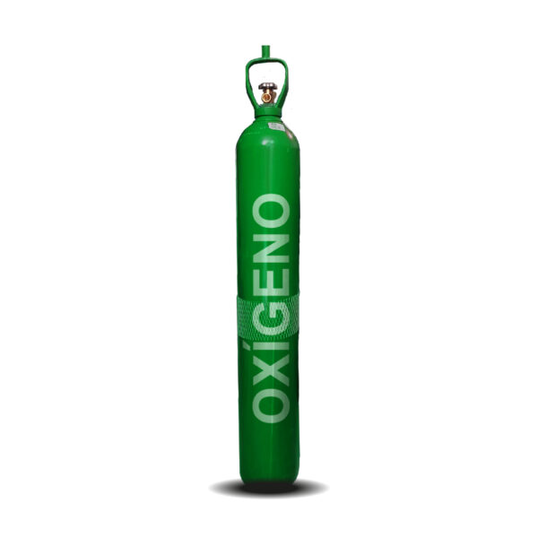
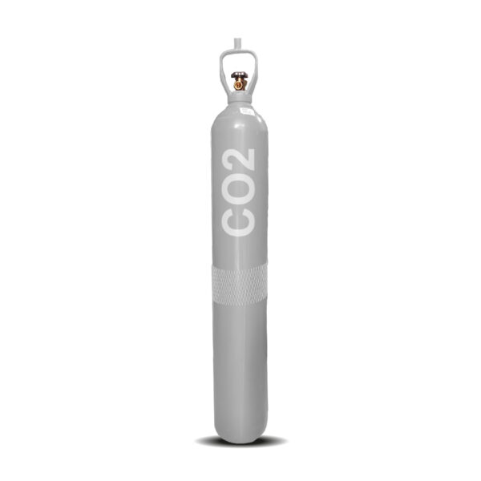
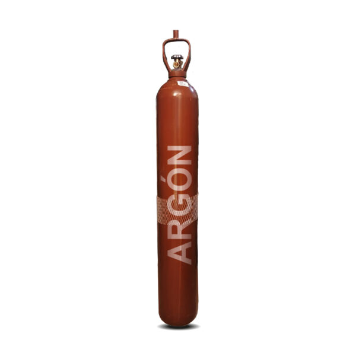
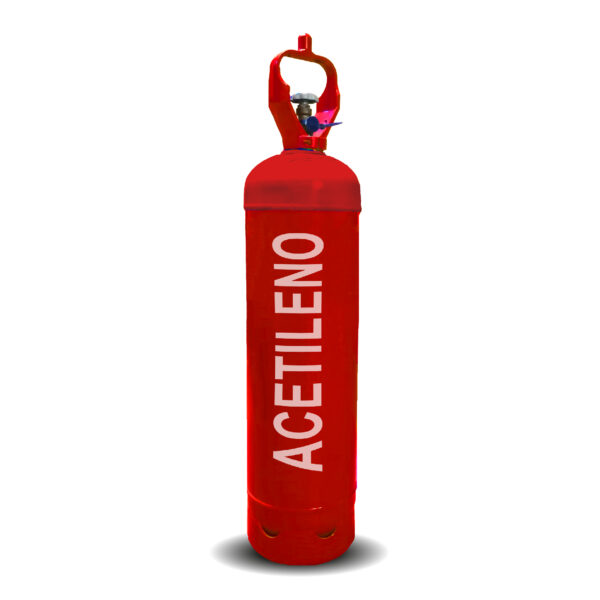
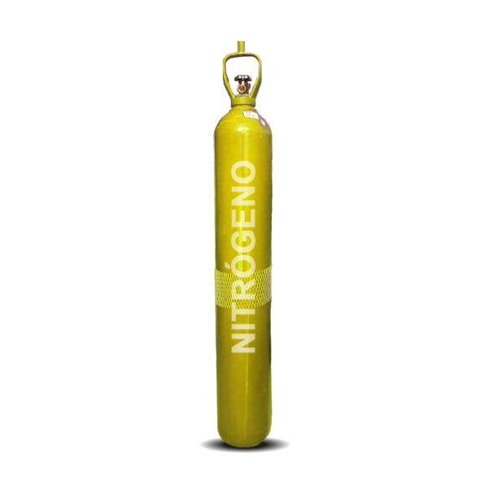

Recarga de cilindros
Consulta disponibilidad para llenar o recargar tu cilindro según el tipo de gas requerido.
Gases y recarga de cilindros
Venta, canje y recarga de cilindros para talleres, empresas metalmecánicas, operaciones industriales y clientes que necesitan respuesta rápida.
Consulta disponibilidad para llenar o recargar tu cilindro según el tipo de gas requerido.
Coordinamos el intercambio de cilindros para reducir tiempos de espera en tu operación.
Atendemos pedidos de gases industriales para soldadura, corte, mantenimiento y procesos técnicos.
Catálogo de gases
Estos son los gases principales que un cliente suele buscar para taller, industria o mantenimiento.

Usado en oxicorte, soldadura, mantenimiento y procesos industriales.
Cotizar oxígeno
Aplicado en soldadura MIG, procesos técnicos, bebidas y sistemas de enfriamiento.
Cotizar CO2
Ideal para soldadura TIG, MIG y trabajos donde se necesita mayor precisión.
Cotizar argón
Utilizado para corte, soldadura autógena y trabajos metalmecánicos.
Cotizar acetileno
Gas usado en purgas, presurización, mantenimiento y aplicaciones técnicas.
Cotizar nitrógenoProceso de atención
La idea de esta página es que el cliente no tenga que adivinar qué hacer. Le mostramos el camino completo para que escriba por WhatsApp con una consulta clara.
Por ejemplo: oxígeno, CO2, argón, acetileno o nitrógeno.
Eso ayuda a responder con disponibilidad y tiempos reales.
Se define si el pedido se despacha o si el cliente se acerca al local.
Cotización directa
Escríbenos indicando el gas, cantidad y si necesitas recarga, canje o compra.